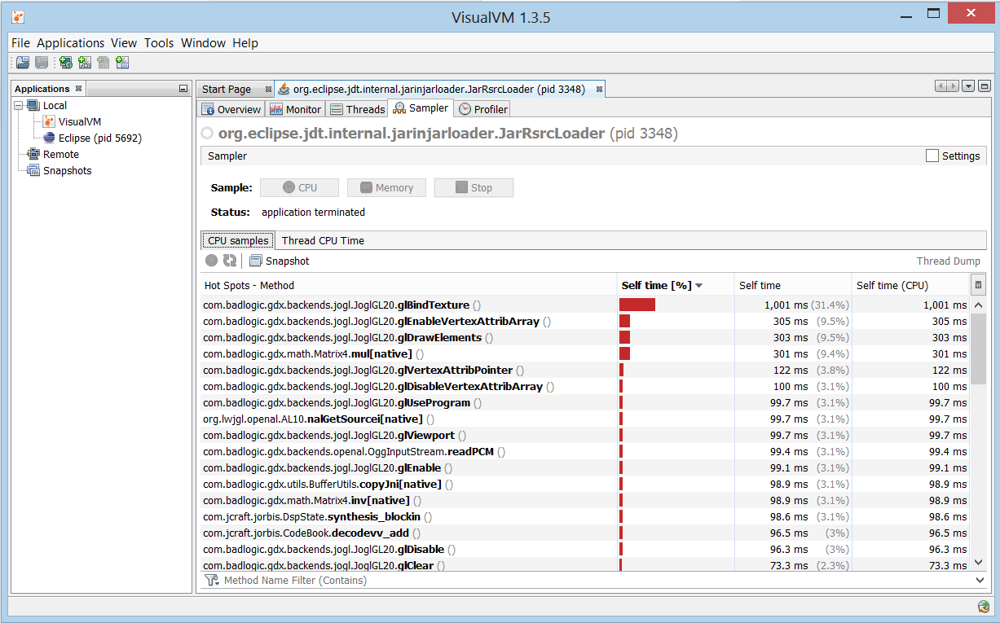

Beware memory allocation
Jan 29, 2013 · CommentsGames development
I bet you already know that keeping memory allocation under control in real time applications is absolutely essential. Bad memory management in non garbage collected languages, say C++, results in irresponsible footprints. $deity forbid we incur in a std::bad_alloc exception! That can be a deal breaker for mobile phones or consoles. However, the other family of languages is what really haunts me. In Java, for instance, the consequences of not giving a monkey’s about memory won’t necessarily make your game crash. Nonetheless, it can be silently devastating to the point of dragging your frame rate below ground absent previous notice.
You don’t want that now, do you?
Please, let me take a step back and point out the irony of having to be extremely careful with memory usage in the presence of a garbage collector (GC) when dealing with real time problems. It’s often said that it takes the responsibility off you. In a beautiful world where code tastes like lollipop it would, but this is really not the case. At least not entirely.
This article is aimed at developers who code in GC environments to make real time applications. Concepts here also apply to broader fields in spite of the focus mainly being Java and games development using the libgdx framework. Actually, I decided to write this post after seeing the same performance related questions over and over again in the libgdx forums. Most of them are closely tied to memory allocation.
Be aware of the GC and why it’s critical in mobile/consoles
The GC is fired up every now and then and asks: “what objects are currently not being referenced by any variable?”. The next step is freeing the memory those objects were occupying so it becomes available for other purposes. It keeps the playground clean and neat and that’s awesome to some extent. Surely enough, this might not cause too much trouble in classic applications. However, it can be deadly in a situation where you have less than 1/60s to compute a discrete simulation step.
Note: I just told a white lie. JVM’s GC actually follows several strategies to free up unused memory as pointed out in this Stack Overflow post.
A common mistake, which I’ve made myself with Freegemas, is to believe my game is well optimized because it runs flawlessly on an i7 machine. Don’t fool yourself, go on and deploy your libgdx app on a mid tier Android phone and see what happens.
Oh well… This is disappointing…
Mobile devices and consoles typically fall short on memory. You miss those 16GB of RAM, don’t you? Moreover, every time the GC decides to intervene, the stall becomes more noticeable due to the less powerful CPU.
Oh noes!
Long story short, we need to prevent this from happening as much as we possibly can.
Cache temporal variables as data members
It goes without saying that some memory allocation is needed. Don’t worry about loading your assets at sensible times as well as creating game objects to get things ready. Nevertheless, avoid making use of the new operator inside your game loop at any cost.
Sometimes I do need some auxiliary, yet costly, objects to perform calculations every frame.
Worry no more as you can make them private data members. As cheeky as it may sound, this will spare you a fair amount of problems.
I”m currently working on a GLEED level system refactor and I think the renderer class could serve us as an perfect example. I use two Rectangle objects (Axis Aligned Bounding Boxes) to perform frustum culling: the first one represents the camera while the second one corresponds to the texture we might or might not render. Those two Rectangle objects don’t naturally belong to the GLEEDMapRenderer themselves, but why would I allocate memory for new instances every single frame. That”d make the GC sad. Instead, take a look at this simplified snippet.
public class GleedMapRenderer implements MapRenderer, Disposable {
// Renderer data
private GleedMap m_map;
private SpriteBatch m_batch;
private boolean m_ownSpriteBatch;
private float m_mpp;
// Aux data for fustrum culling
private Rectangle m_box = new Rectangle();
private Rectangle m_camera = new Rectangle();
public void render(OrthographicCamera camera) {
m_camera.x = camera.position.x - camera.viewportWidth * 0.5f * camera.zoom;
m_camera.y = camera.position.y - camera.viewportHeight * 0.5f * camera.zoom;
m_camera.width = camera.viewportWidth * camera.zoom;
m_camera.height = camera.viewportHeight * camera.zoom;
setProjectionMatrix(camera.combined);
MapLayers layers = m_map.getLayers();
for (MapLayer layer : layers) {
renderLayer(layer);
}
}
private void renderLayer(MapLayer layer) {
if (!layer.getVisible()) {
return;
}
MapObjects objects = layer.getObjects();
int numObjects = objects.getNumObjects();
for (int j = 0; j < numObjects; ++j) {
MapObject mapObject = objects.getObject(j);
if (mapObject == null || !mapObject.getVisible()) {
continue;
}
if (!(mapObject instanceof TextureMapObject)) {
continue;
}
TextureMapObject texture = (TextureMapObject)mapObject;
setBounds(texture);
// If the image is in the frustum, draw it (culling)
if (m_camera.overlaps(m_box) ||
m_camera.contains(m_box) ||
m_box.contains(m_camera)) {
...
}
}
}
}
As illustrated above, the Rectangle instances are created along the renderer and properly set every frame. Consequently, what initially would have involved memory allocations, assignments and GC activity is reduced to just a few unavoidable assignments. Let’s mention it once again, in spite of rectangles being cheap, you don’t want to mess with the GC on mobile devices!
Consider object pooling
Unfortunately, at some point you will find yourself in the need of constantly creating dozens of big sized objects. It’s a common problem when dealing with spawning game entities, particle effects and the like. Say you”re making a space shooter, of course you want hundreds of flashy explosions and lasers! You”ll face a problem, that can drive the GC crazy as particles pop up or disappear.
Attention! The object pool game programming design pattern is on its way to rescue the programmer in distress!
I”d encourage you to read through this wonderful article to get to know this common pattern. In brief, we basically keep a collection of pre-created objects (pool) that will be retrieved as necessary. We could have a pool with 1000 particle effects, every time we need an explosion in our game we just ask the pool for one. Right after we”re done with it, we put it back. As a consequence, we won’t require to allocate memory every time we need a fancy explosion since the pool will be created during launch.
Luckily enough, libgdx provides the Pool abstract class and the Poolable interface to achieve this behavior (had we seen ourselves in the need to come up with an implementation, it wouldn’t have been the end of the world either).
abstract public class Pool {
public Pool ();
public Pool (int initialCapacity);
public Pool (int initialCapacity, int max);
abstract protected T newObject ();
public T obtain ();
public void free (T object);
public void freeAll (Array objects);
public void clear ();
static public interface Poolable {
public void reset ();
}
}
As you can probably deduce after reading the previous snippet, in order to make a resource poolable it’s required to implement the reset() method of such interface. Then you need to create a new Pool class that implements the newObject() method which means the poolable object must provide a default constructor. Easy peasy. However, if by any chance you come across any problems while implementing this yourself, take a look at the official documentation or at this sample to have efficient bullets.

For those who remain skeptic, I used the libgdx ParticleEffectPool class in Freegemas to enhance efficiency with noticeable improvements in mobile devices. Every time you connect a group of 3 or more gems you get a sparkle effect right away. Even though this can be found in the Freegemas game state class implementation, I”ll attach the interesting bits below.
// Create prototype effect
ParticleEffect effect = new ParticleEffect();
effect.load(Gdx.files.internal("data/particleStars"), Gdx.files.internal("data"));
// Create effects pool using thay prototype
ParticleEffectPool effectPool = new ParticleEffectPool(effect, 20, 100);
// Add new effect and enable it
ParticleEffect effect = effectPool.obtain();
effect.start();
// Put effect back in pool (first check if it has finished)
if (effect.isComplete()) {
effectPool.free(effect);
}
Here we go, GC friendly particles. Neat, isn’t it?
Still in trouble? Do some profiling
Alright, I”m pretty sure your advice is utter bullshit, my app is still laggy! I want my money back.

Before throwing that rotten tomato you”re waving in anger, please consider giving profiling a shot. Get VisualVM, make it analyze your game while it’s running and take a close look at the results. You might find out that a seemingly harmless method is consuming an obscene amount of CPU time. Who knows, perhaps you’ve missed several memory allocations within the game loop. Despite of its simplicity, yes, I will tackle profiling with depth further ahead in this very same blog.
Promise.